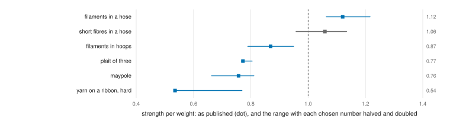
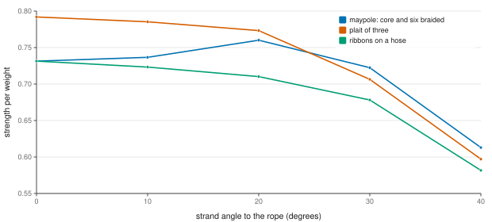
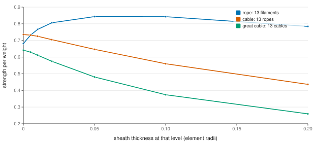
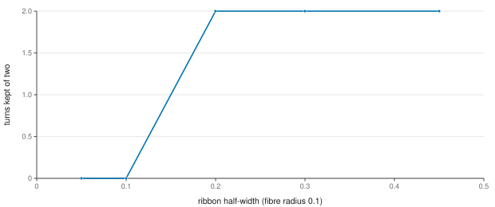
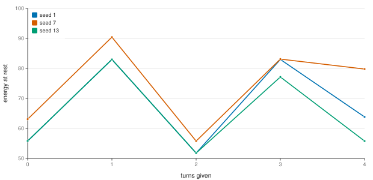
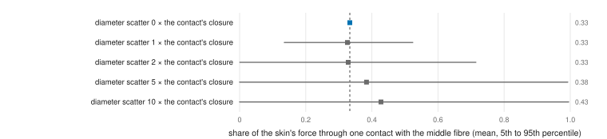

Rope after the knot: what was tested, how, and what came out
Every chart is drawn from a baked data file by charts.mjs; the files are made by the scripts named in the draft's methods. The ropes themselves are drawn in the rope figures.
Method 1. The tensile bench

What was done. A rope is 96 sections long. Each fibre's place is a track of unit links, one continuous filament or short fibres 40 links long laid end to end at a random phase. Every link has the same stiffness and its own strength, drawn from a Weibull distribution of modulus 5. Neighbouring tracks are joined at every section by a frictional interface: elastic (stiffness 0.25 of a link's) until its shear reaches μ = 0.3 times the press between the two, then slipping at that force. Both ends are held in jaws. The rope is stretched in 110 equal steps to 4.5%. At each step the equilibrium is the minimum of a convex energy, found by Newton's method with a banded Cholesky solve and a line search; then any link over its strength is broken, worst first, and the equilibrium found again. A solve is accepted only if its last step is under a tolerance of 10⁻⁹ of the stretch; runs that fail this are reported and left out.
What it shows. The model: what is varied between ropes is who touches whom (the cross-section's packing) and the law for the press. Strength is the peak force at the jaws, in units of one continuous strand's mean strength at the same length, divided by the rope's weight in strands with every sheath, hose and extra strand length counted.
Method 2. One pull

What was done. Sample 1 of four ropes, force at the jaw against stretch.
What it shows. A strand fails at its weakest link. A loose bundle fails in a cascade as each break hands its load on. In a hose, a broken filament is gripped and carries load again a little way along, so the rope climbs higher and holds a plateau after it peaks.
Result 1. Every rope, per weight

What was done. Each rope pulled 200 times with different random strengths and fibre phases. The dot is the mean, the bar the 5th to 95th percentile. The line at 1 is a single continuous strand's mean.
What it shows. Filaments in a hose are the only rope whose mean beats a strand's, and their whole distribution sits above a strand's 5th percentile. A 4D yarn of twisted threads has no strength at all. Braids and hoops sit with the loose bundle.
Result 2. What a sheath weighs against what it grips

What was done. Thirteen fibres in a sheath of each thickness, 60 pulls a point. A hose τ thick weighs 27τ fibres' worth and presses each outer fibre with 0.06 × HOOP × τ (HOOP = 0.5: the skin's mean stress as a share of its strength); fibre to fibre a third of that. A hose also carries load along the rope; hoops do not.
What it shows. There is a best thickness, a tenth to a fifth of a fibre's radius. Past it the weight outruns the grip. Hoops never reach 1.
Result 3. Does the order survive the chosen numbers?

What was done. Three numbers are chosen, not measured: HOOP, the laying tension of a yarn or braid (5% of a link's strength), and friction (0.3). Each rope was re-pulled with each number halved and doubled (60 pulls a tuning), re-tuned to its best thickness or angle each time.
What it shows. The order holds: a hose of filaments stays above 1 and hoops below it at every setting. Yarn on a ribbon moves so much that it can be ordered but not quoted.
Result 4. Braids, by angle

What was done. A strand laid at angle θ is a track of stiffness cos³θ and strength cosθ, weighing 1/cosθ, pressing tan²θ × its tension on its neighbours. 200 pulls a point; 0° is the same hoses loose.
What it shows. Braiding barely moves strength per weight and then loses it: the angle that grips is the angle that costs.
Result 5. Cabling

What was done. Thirteen ropes in a sheath, then thirteen of those: the same bench with the level below as its fibre, given that level's measured strength distribution, stiffness and weight. 40 pulls a point.
What it shows. Each level is worth less per weight than the one below, and a thicker jacket only makes it worse.
Result 6. A hose that tightens as it is pulled

What was done. The hose's press multiplied by 1 + (Δν / 0.005) × stretch, where Δν is how much larger its Poisson ratio is than its fibres' and 0.005 its misfit. 60 pulls a tuning, best thickness.
What it shows. A difference materials could supply (about 0.2) adds little. A sheath built to contract adds a tenth.
Method 3 and Result 7. Twist, in three dimensions and in four

What was done. Seven fibres, one in the middle and six round it, each a chain of 33 beads joined by springs (stiffness 3000), with a repelling contact (stiffness 6000) between beads of different fibres closer than two radii. The top end is turned two full turns in the x–y plane, both ends are clamped, the yarn is stretched 3%, every free bead is jiggled by 0.002, and the whole is relaxed by damped dynamics for 30000 steps. The same code runs with three coordinates and with four; the only difference is that a bead has one more direction to move in. "Turns still wound" follows one outer fibre round the core.
What it shows. In three dimensions both turns stay. In four they leave within the first few thousand steps, and the yarn ends at the untwisted energy (4.72 against 4.72). With no jiggle the 4D twist stands (2 turns): it is an equilibrium, and an unstable one.
Result 8. Turns kept against turns given

What was done. The same experiment for 0 to 3 turns, read at rest.
What it shows. Ours keeps what it is given. The 4D yarn keeps nothing of a whole turn and all of a half turn: a half turn cannot be undone with the ends clamped, in either world.
Result 9. A ribbon core

What was done. The 4D yarn again, two turns, with the middle fibre replaced by a rigid ribbon of the given half-width across the spare direction.
What it shows. Below a threshold between 0.1 and 0.2 (one to two fibre radii) the fibres slip round the ribbon's edge and the twist is lost. Above it both turns stay.
Result 10. Thirteen fibres pressed together by a hose

What was done. The full 4D bundle (one fibre and the twelve that fit round it) inside a wall no bead's centre may pass, set at 0.19 where the fibres touch at 0.2. 0 to 4 turns given, three random seeds, 40 000 steps. With no hose the same thirteen shed every turn (rest energy 8.78 whatever they are given).
What it shows. Odd numbers of turns never come to rest below 77; even numbers reach 52 to 56 in about two runs in three and jam higher in the rest (up to 80). So the two overlap: the evidence for "one turn is kept and two are shed" is the floor under the odd runs, not a clean separation. Five turns jam far higher and are not plotted.
Check 1. The law a wound fibre presses by

What was done. For the 3D bead yarn at four twists, the inward force on an outer fibre per unit tension, read from its contacts, against tension × curvature for a helix of the measured radius and angle.
What it shows. Within 19% below 20°; above it the bead yarn presses about 1.4 times the law.
Check 2. Who carries the skin's force

What was done. Thirteen balls with one-sided linear contacts, each outer ball pushed inward by 1; diameters drawn at random, 200 packings a row. The line is one third.
What it shows. With equal fibres every contact carries a third. As the fibres become unequal the mean stays near a third and the spread grows until a contact is as likely to carry nothing as two thirds.